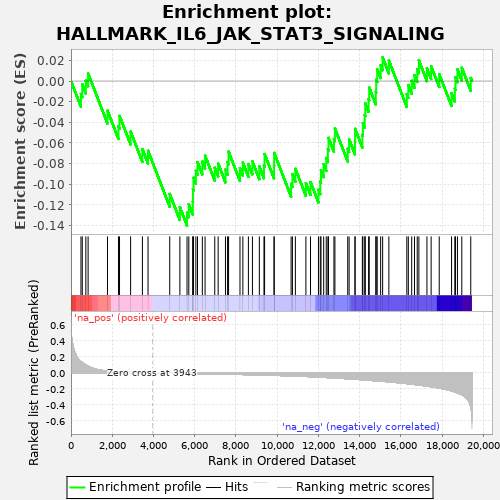
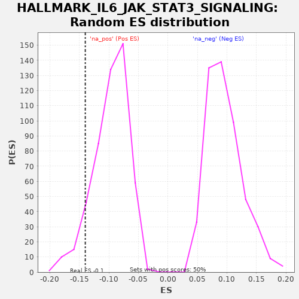

| | | Dataset | X_enriched_genes copy |
| Phenotype | NoPhenotypeAvailable |
| Upregulated in class | na_neg |
| GeneSet | HALLMARK_IL6_JAK_STAT3_SIGNALING |
| Enrichment Score (ES) | -0.13993959 |
| Normalized Enrichment Score (NES) | -1.4550068 |
| Nominal p-value | 0.085487075 |
| FDR q-value | 0.091985665 |
| FWER p-Value | 0.895 |
Table: GSEA Results Summary

Fig 1: Enrichment plot: HALLMARK_IL6_JAK_STAT3_SIGNALING
Profile of the Running ES Score & Positions of GeneSet Members on the Rank Ordered List
| SYMBOL | RANK IN GENE LIST | RANK METRIC SCORE | RUNNING ES | CORE ENRICHMENT | | 1 | CD9 | 483 | 0.141 | -0.0124 | No |
| 2 | HAX1 | 547 | 0.130 | -0.0032 | No |
| 3 | CRLF2 | 720 | 0.099 | 0.0004 | No |
| 4 | IL3RA | 830 | 0.084 | 0.0073 | No |
| 5 | DNTT | 1770 | 0.023 | -0.0287 | No |
| 6 | BAK1 | 2303 | 0.014 | -0.0436 | No |
| 7 | IL9R | 2354 | 0.013 | -0.0337 | No |
| 8 | IL12RB1 | 2892 | 0.007 | -0.0489 | No |
| 9 | CSF2RB | 3464 | 0.003 | -0.0659 | No |
| 10 | FAS | 3737 | 0.001 | -0.0674 | No |
| 11 | CD38 | 4790 | -0.005 | -0.1092 | No |
| 12 | LEPR | 5282 | -0.007 | -0.1221 | No |
| 13 | A2M | 5629 | -0.009 | -0.1274 | Yes |
| 14 | IL17RB | 5715 | -0.009 | -0.1193 | Yes |
| 15 | CSF2RA | 5908 | -0.010 | -0.1167 | Yes |
| 16 | IL1R2 | 5916 | -0.010 | -0.1046 | Yes |
| 17 | IL2RA | 5945 | -0.010 | -0.0935 | Yes |
| 18 | EBI3 | 6058 | -0.010 | -0.0868 | Yes |
| 19 | TGFB1 | 6138 | -0.011 | -0.0784 | Yes |
| 20 | IL18R1 | 6372 | -0.012 | -0.0779 | Yes |
| 21 | IL6 | 6504 | -0.012 | -0.0722 | Yes |
| 22 | ACVRL1 | 6974 | -0.014 | -0.0839 | Yes |
| 23 | IL1B | 7139 | -0.015 | -0.0799 | Yes |
| 24 | SOCS1 | 7494 | -0.017 | -0.0856 | Yes |
| 25 | PIK3R5 | 7596 | -0.017 | -0.0784 | Yes |
| 26 | CSF2 | 7644 | -0.017 | -0.0683 | Yes |
| 27 | CCR1 | 8198 | -0.020 | -0.0843 | Yes |
| 28 | IL7 | 8337 | -0.021 | -0.0789 | Yes |
| 29 | IL2RG | 8606 | -0.022 | -0.0803 | Yes |
| 30 | LTB | 8802 | -0.024 | -0.0778 | Yes |
| 31 | CNTFR | 9137 | -0.026 | -0.0826 | Yes |
| 32 | TNFRSF1A | 9362 | -0.027 | -0.0816 | Yes |
| 33 | CXCL3 | 9391 | -0.028 | -0.0706 | Yes |
| 34 | IL15RA | 9852 | -0.031 | -0.0818 | Yes |
| 35 | MYD88 | 9857 | -0.031 | -0.0695 | Yes |
| 36 | TLR2 | 10678 | -0.038 | -0.0994 | Yes |
| 37 | MAP3K8 | 10743 | -0.039 | -0.0902 | Yes |
| 38 | IRF9 | 10885 | -0.040 | -0.0850 | Yes |
| 39 | CCL7 | 11396 | -0.045 | -0.0988 | Yes |
| 40 | IFNGR1 | 11619 | -0.048 | -0.0977 | Yes |
| 41 | CXCL13 | 12005 | -0.053 | -0.1051 | Yes |
| 42 | CD36 | 12093 | -0.054 | -0.0971 | Yes |
| 43 | ITGB3 | 12128 | -0.054 | -0.0864 | Yes |
| 44 | IFNGR2 | 12259 | -0.056 | -0.0806 | Yes |
| 45 | STAT2 | 12383 | -0.058 | -0.0744 | Yes |
| 46 | PIM1 | 12463 | -0.059 | -0.0660 | Yes |
| 47 | CD14 | 12493 | -0.060 | -0.0550 | Yes |
| 48 | TNF | 12756 | -0.063 | -0.0560 | Yes |
| 49 | IL17RA | 12803 | -0.064 | -0.0459 | Yes |
| 50 | ITGA4 | 13425 | -0.074 | -0.0654 | Yes |
| 51 | TYK2 | 13492 | -0.075 | -0.0564 | Yes |
| 52 | PTPN2 | 13777 | -0.079 | -0.0585 | Yes |
| 53 | ACVR1B | 13782 | -0.079 | -0.0462 | Yes |
| 54 | PTPN1 | 14135 | -0.086 | -0.0519 | Yes |
| 55 | IL1R1 | 14161 | -0.086 | -0.0407 | Yes |
| 56 | STAT1 | 14250 | -0.089 | -0.0327 | Yes |
| 57 | PDGFC | 14278 | -0.089 | -0.0216 | Yes |
| 58 | PF4 | 14438 | -0.092 | -0.0173 | Yes |
| 59 | TNFRSF1B | 14468 | -0.093 | -0.0063 | Yes |
| 60 | IL13RA1 | 14787 | -0.099 | -0.0102 | Yes |
| 61 | GRB2 | 14806 | -0.099 | 0.0013 | Yes |
| 62 | HMOX1 | 14855 | -0.100 | 0.0114 | Yes |
| 63 | LTBR | 15022 | -0.104 | 0.0153 | Yes |
| 64 | CBL | 15119 | -0.106 | 0.0228 | Yes |
| 65 | CSF1 | 15421 | -0.112 | 0.0198 | Yes |
| 66 | OSMR | 16292 | -0.134 | -0.0126 | Yes |
| 67 | IL10RB | 16365 | -0.136 | -0.0038 | Yes |
| 68 | IFNAR1 | 16529 | -0.140 | 0.0003 | Yes |
| 69 | TNFRSF21 | 16665 | -0.145 | 0.0058 | Yes |
| 70 | SOCS3 | 16797 | -0.149 | 0.0115 | Yes |
| 71 | STAM2 | 16877 | -0.152 | 0.0200 | Yes |
| 72 | IRF1 | 17268 | -0.165 | 0.0123 | Yes |
| 73 | IL6ST | 17472 | -0.172 | 0.0143 | Yes |
| 74 | CXCL10 | 17864 | -0.191 | 0.0067 | Yes |
| 75 | PTPN11 | 18463 | -0.225 | -0.0117 | Yes |
| 76 | TNFRSF12A | 18622 | -0.237 | -0.0074 | Yes |
| 77 | CXCL1 | 18651 | -0.240 | 0.0037 | Yes |
| 78 | STAT3 | 18748 | -0.250 | 0.0112 | Yes |
| 79 | CD44 | 18959 | -0.274 | 0.0129 | Yes |
| 80 | JUN | 19394 | -0.432 | 0.0030 | Yes |
Table: GSEA details [plain text format]

Fig 2: HALLMARK_IL6_JAK_STAT3_SIGNALING: Random ES distribution
Gene set null distribution of ES for HALLMARK_IL6_JAK_STAT3_SIGNALING